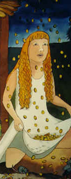

The star-money

There was once on a time a little girl whose father and mother were dead,
and she was so poor that she no longer had any little room to live in,
or bed to sleep in, and at last she had nothing else but the clothes
she was wearing and a little bit of bread in her hand which some charitable soul had given her.
She was, however, good and pious. And as she was thus forsaken by all the world,
she went forth into the open country, trusting in the good God.
Then a poor man met her, who said: "Ah, give me something to eat, I am so hungry!"
She reached him the whole of her piece of bread, and said: "May God bless it to thy use,
" and went onwards. Then came a child who moaned and said: "My head is so cold,
give me something to cover it with." So she took off her hood and gave it to him;
and when she had walked a little farther,
she met another child who had no jacket and was frozen with cold.
Then she gave it her own; and a little farther on one begged for a frock, and she gave away that also.
At length she got into a forest and it had already become dark, and there came yet another child,
and asked for a little shirt, and the good little girl thought to herself: "It is a dark night
and no one sees thee, thou canst very well give thy little shirt away," and took it off,
and gave away that also.
And as she so stood, and had not one single thing left, suddenly some stars from heaven fell down,
and they were nothing else but hard smooth pieces of money,
and although she had just given her little shirt away,
she had a new one which was of the very finest linen.
Then she gathered together the money into this, and was rich all the days of her life.